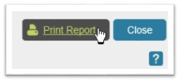

SAP Crystal Reports
Good to Know
NOTES
Crystal Reports 2013 is installed in CEIT 3208 & 3210 and the CEIT vlab.
This assignment is to be completed as an individual.
To complete the online training, the only software you need is a browser.
Online Training
Complete (launch) the online training for Crystal Reports. The code of the module you will complete is: cr_crre_a01_dt_enus
Good to Know
If you cannot see the video, please switch to IE.
To accommodate the redesign of mygeorgiasouthern, use search to find the link.
Once launched, the modules to complete are listed in the Table of Contents:
Here they are:
This training does not have to be completed in one sitting (it will keep track of your progress).
At the completion of each module, you will be asked to complete a short test. Please complete all quizzes for this online training module. There is no need to complete any pre-tests, unless you are forced by the system to do so.
NOTE About online training
When launching the cr_crre_a01_dt_enus module, you may find the training session slow to load - i.e., the training does not load in a reasonable amount of time. There are two main reasons for this issue (with no.2 being the more likely culprit): 1. your computer and/or internet connection is very slow and it takes a long time to download the applet and fire it up; 2. You do not have Java installed on your computer, or have not updated it for quite a while, or it is not properly enabled. Of course, this should not be an issue if you are using the vlab. One way to know you have an issue with No. 2 if you see a notification that the system wants a plug-in that is not currently available. Also ensure you have turned off pop-up blocking for the SkillSoft site. More information is available here. In my opinion, Firefox tends to do a better job at alerting users to issues needing attention, compared with the other browsers.
Submission Note
then print the report

The report (this one is a little dated) should look something similar to this, but with also your name clearly showing).
At this stage, you may have to also disable your pop-up blocker for this page.
Either print out the report to PDF, or take a screenshot of it (e.g., you can use on the CEIT vlab the application: Snipping Tool) of your test results. When you go to print on the vlab, the printer drivers on your machine will be shown. If you do not have a print drive to print to PDF, you can install this free PDF printer.
NOTES
At this stage, if you do not see the test report come up, then disable pop-up blockers for this website. Sometimes the report may open in a new window, which may be hidden behind the window you are viewing.
If the SkillSoft training module appears to take forever to load, please read the above: Note About Online Training.
Hands-on
Complete the task shown in this document.
The Access file referred to in the assignment (i.e., GBI.mdb) can be downloaded here (Hold the [Ctrl] key down when clicking this link. You will be then taken to a Google Drive page, in which you can click on the 'Download' button to download the Access file. It must be downloaded to the PC's hard-drive).
The image you will need can be found here.
{kind=link}
NOTE
If you cannot down load, view the image in Firefox and right-mouse click the image, like shown below.
Submission Note
Then take a screenshot of the report, like the last image in the assignment what-to-do document. However, your screenshot must also show the Windows operating system date/time display showing when exactly the screenshot was taken.

Put this screenshot into a PowerPoint slideshow, together with the screenshot of your online training test scores on another slide, and submit this PPT.
Special grading penalties
- failure to include the windows operating system date/time display will result in a 30% penalty (with no option to fix after due date).
- do not include more than 2 slides in your submission - e.g., you were not asked for an introduction slide (penalty 10%).
- do not submit the rpt file - i.e., the Crystal Reports file (if you submit this file, there will be a 10% penalty).
- failure to amend report title to include your last name (20% penalty